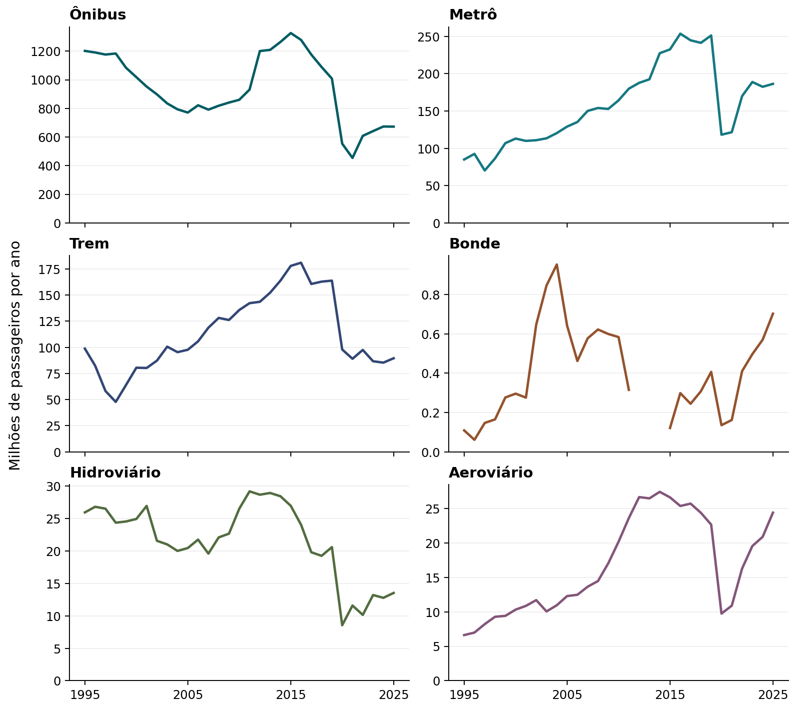
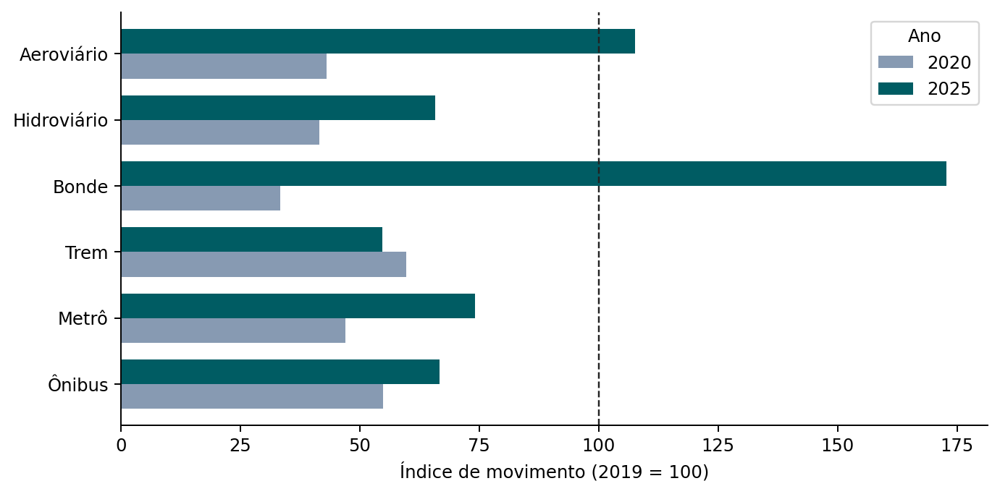

Resumo
Como mudou o peso dos ônibus no movimento de passageiros do Rio de Janeiro e quais modais recuperaram o volume registrado em 2019? O estudo usa a Tabela 440 do Data.Rio para acompanhar seis séries anuais entre 1995 e 2025. A planilha original foi tratada em Python, mantendo a unidade de milhares de passageiros e as lacunas documentadas para o bonde de Santa Teresa. A comparação combina volumes absolutos, participações em anos com cobertura completa e índices relativos a 2019. Os ônibus mantiveram o maior movimento ao longo da série, mas sua participação caiu de 84,7% em 1995 para 68,1% em 2025. No mesmo intervalo, o metrô passou de 6,0% para 18,9%. Em 2020, todos os modais registraram queda frente ao ano anterior. Em 2025, apenas o bonde e o transporte aeroviário superaram seus volumes de 2019. Os resultados mostram como o crescimento relativo de um modal pode coexistir com um volume ainda inferior ao de anos anteriores. A agregação anual permite descrever essas diferenças, mas impede identificar trajetos individuais ou atribuir as mudanças a uma causa específica.
Palavras-chave · Mobilidade urbana, transporte de passageiros, Rio de Janeiro, séries temporais, dados abertos.
1. Introdução
A contagem anual ajuda a dimensionar o uso de cada sistema de transporte. Um modal pode ganhar participação enquanto perde passageiros, caso os demais recuem mais. Para distinguir esses movimentos, examinamos três perguntas.
- Como evoluiu o volume de passageiros em cada modal?
- Como mudou a participação dos modais entre 1995 e 2025?
- Quais modais superaram em 2025 o volume de 2019, após a queda de 2020?
2. Metodologia e pipeline de dados
A aba T 440 do arquivo XLS contém uma linha por ano e seis séries em milhares de passageiros. O ETL lê a planilha binária com xlrd e pandas, identifica as linhas com ano numérico, verifica a sequência de 1995 a 2025, converte os volumes para números decimais e grava CSV.GZ em UTF-8. Não há imputação. O bonde apresenta três valores indisponíveis entre a interrupção de agosto de 2011 e a retomada de julho de 2015.
total = dados.sum(axis=1, min_count=6)
participacao = dados.div(total, axis=0).mul(100)
indice = dados.div(dados.loc[2019]).mul(100)
A participação exige cobertura completa. Para medir a retomada, cada modal é comparado com seu próprio volume em 2019. O índice conserva o sentido da variação mesmo quando os níveis absolutos diferem muito.
3. Resultados e discussão
Trajetórias anuais
Os ônibus lideraram em todos os anos. O movimento passou de 1,20 bilhão em 1995 para 1,33 bilhão no pico de 2015, após oscilações importantes. Em 2021 caiu para 454,2 milhões. Em 2025 alcançou 672,6 milhões. O metrô atingiu seu máximo em 2016, com 253,6 milhões.

Figura 1. Evolução de cada modal, com escalas verticais próprias. A quebra na linha do bonde indica dados ausentes. Fonte das figuras e tabelas: elaboração dos autores com a Tabela 440.
Composição do movimento
De 1995 a 2025, a parcela dos ônibus caiu 16,6 pontos percentuais e a do metrô cresceu 12,9 pontos. O movimento do metrô também cresceu em termos absolutos, de 85,0 para 186,4 milhões. Essa combinação não permite inferir quantas pessoas trocaram um modal pelo outro.
Queda e retomada frente a 2019
Em 2020, as quedas variaram de 40,2% no trem a 66,7% no bonde. Em 2025, o trem continuava 45,3% abaixo de 2019. O bonde teve a maior alta relativa (+72,8%), mas respondeu por apenas 0,07% do movimento em 2025. O aeroviário foi o outro modal a superar 2019 (+7,7%).

Figura 2. Cada barra compara um modal com seu próprio volume de 2019. A linha tracejada marca o nível de referência.
Consultar o movimento de passageiros por ano
Unidade: mil passageiros. Traço indica dado indisponível. Valores exibidos com uma casa decimal.
4. Conclusão
A distância entre a retomada do bonde e a do trem mostra por que o total da cidade pode esconder trajetórias diferentes. Os registros anuais excluem vans e kombis e podem contar várias viagens da mesma pessoa. Também não distinguem bairros, tarifas ou oferta de serviço. Um estudo posterior poderia confrontar esses volumes com viagens ofertadas por modal e investigar a cobertura territorial das mudanças.
5. Disponibilidade dos dados e declaração FAIR
A Tabela 440 identifica a fonte. O repositório reúne a cópia bruta, o dicionário das sete variáveis e o CSV.GZ para leitura em outros programas. O código usa MIT e o texto e as figuras da dupla usam CC BY 4.0. A licença do conjunto original deve ser consultada com o provedor. O artigo funciona sem serviços gráficos externos.
Para reproduzir, extraia o ZIP ou clone o repositório pelo endereço HTTPS do botão Code. Na raiz do projeto, em um ambiente Python 3.12:
python -m pip install -r requirements.txt
python -m src.etl
python -m src.figuras